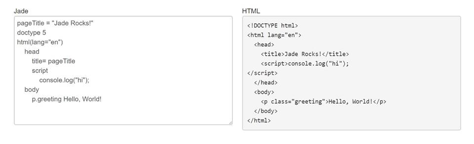

What is Jade and why did I use it to code my website?
Published: 4th November 2017
Jade is a templating language that complies into HTML code. Jade allows you to code without the need of tags making coding quicker and cleaner. This is also helped through the features within the Jade language.

A few features are:
- Block Expansion: allows you to nest tags on one line.
div: p Hello world
- Assignment: allows you to set a value to a variable.
- var name = “sophie thomas”p= name
- Template Includes: allows you to separate the page into sections (called includes) and add them into pages
// mainPage.jadep Welcome to my website.include about.jade// about.jadep Here is a little bit about me and what I do
For more documentation on .jade visit their website: http://learnjade.com/
Why did I use it to code my website?
For my latest portfolio website redesign I used Jade to code the website. The main reason to why I used Jade was because I wanted to make my website easier to edit in the future. By using the includes feature I was able to split the website up into sections and use them in the different pages of the website. Examples of these section were:
- header
- about
- projects
- articleslist
- footer
The reason to why this feature makes it easier to edit my website in the future is that if for example I just wanted to edit the social links in the header I’d only need to change the code in the header.jade file rather than having to edit the code in every file that it is used on.
I also used many of the other features that Jade provides which helped speed up the time it took to code the website.
Another reason to why I decided to use Jade was because of the hosting I use for my website. I host my website using Github Pages which only allows for static websites. This means that server-side programming languages like PHP and C# can’t be uploaded. From what I’ve seen, Jade is most similar to PHP as it has many of the features PHP has such as includes and the use of variables. By using Jade, I can compile the .jade files into HTML using a compiler and upload my files to Github Pages whereas if I coded my website in PHP I’d have to change where I host my website.
After coding my website using Jade, which is the first time I’ve used Jade in a project, I really found coding in this language much cleaner and faster. I have also found that it is a lot easier to follow the code as there isn’t lots of tags getting in the way of the content.